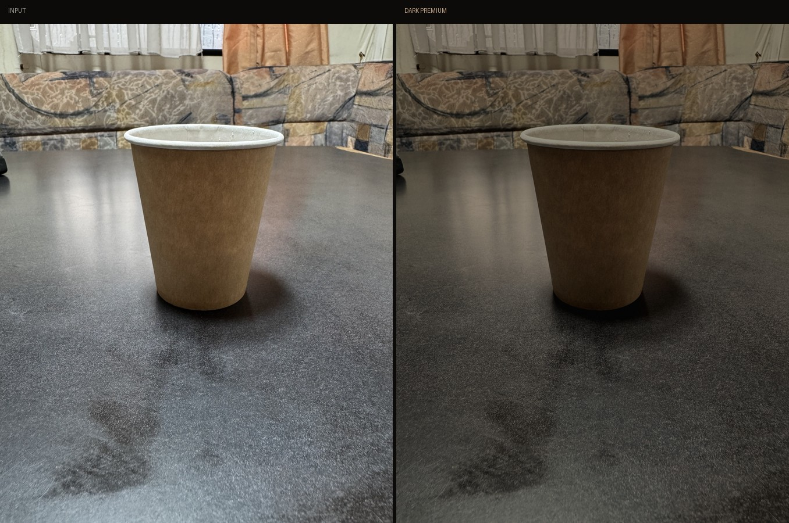
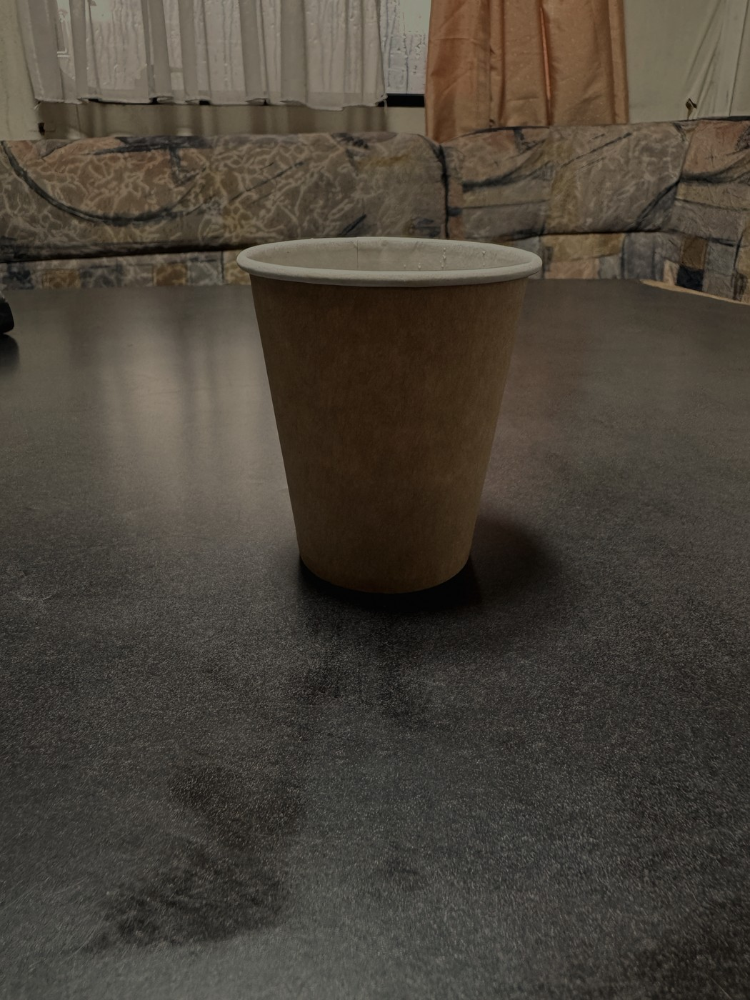
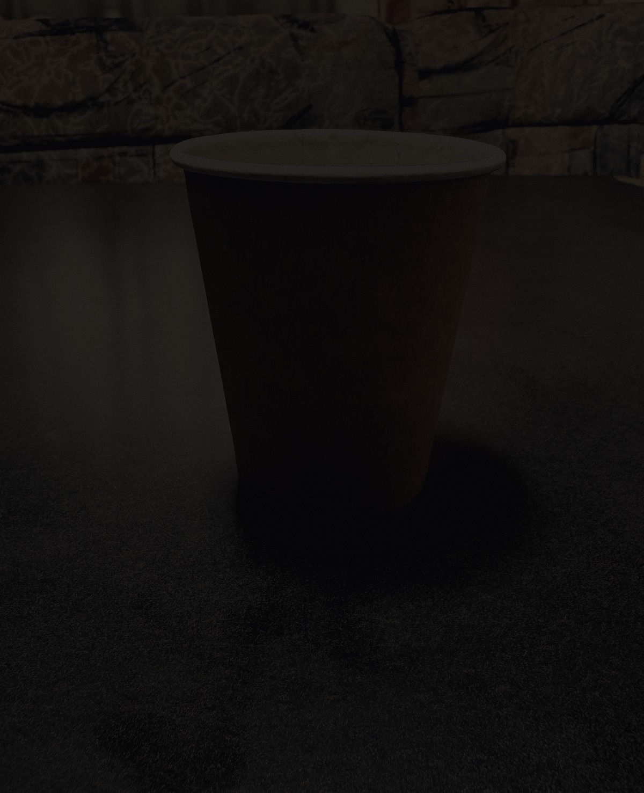
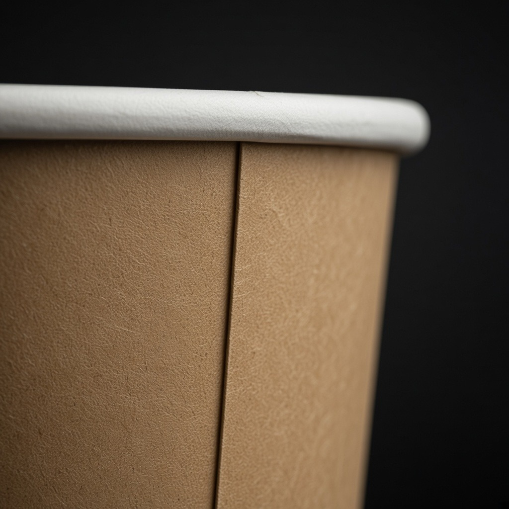
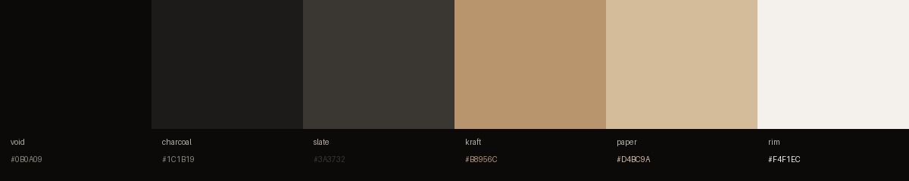

Before / After
Исходник → Dark Premium
Приглушённый цвет, тёплый крафт, vignette и зерно — без «фиолетового dark UI».

Treatments
Три версии кадра
Грейд исходника, студийный crop и editorial / detail — для сторис, обложек и moodboard.



Tokens
Палитра Dark Premium
Шесть токенов с кадра: void → kraft → rim. Готовый CSS в palette.css.
/* darkpremium/palette.css */ --dp-void: #0B0A09; --dp-charcoal: #1C1B19; --dp-slate: #3A3732; --dp-kraft: #B8956C; --dp-paper: #D4BC9A; --dp-rim: #F4F1EC;
